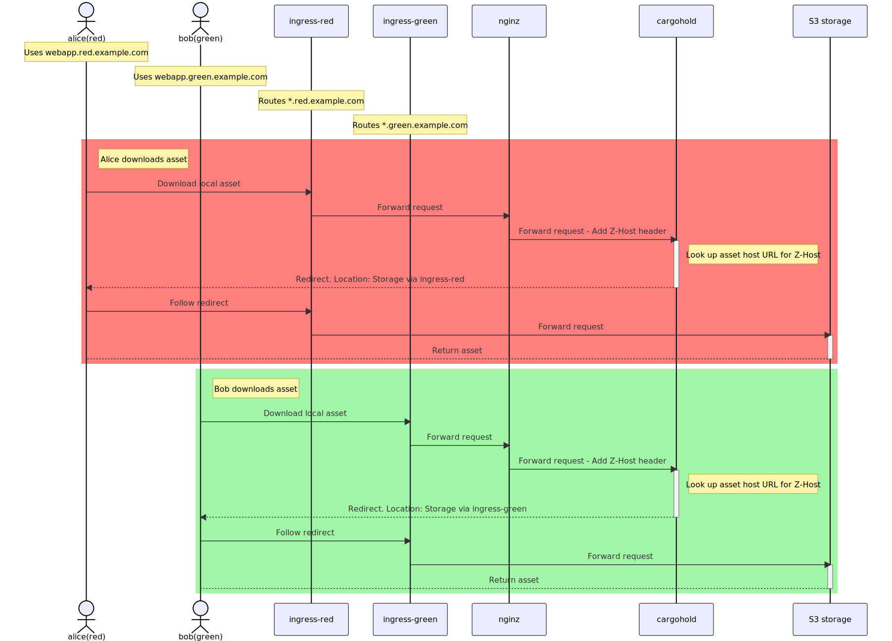

1. Config Options
Reference: {#RefConfigOptions}
Fragment.
This page is about the yaml files that determine the configuration of the Wire backend services.
1.1. Settings in galley
# [galley.yaml]
settings:
enableIndexedBillingTeamMembers: false
1.1.1. Indexed Billing Team Members
Use indexed billing team members for journaling. When enabled,
galley would use the billing_team_member table to send billing
events with user ids of team owners (who have the SetBilling
permission). Before enabling this flag, the billing_team_member
table must be backfilled.
Even when the flag is disabled, galley will keep writing to the
biling_team_member table, this flag only affects the reads and has
been added in order to deploy new code and backfill data in
production.
1.1.2. MLS private key paths
Note: This developer documentation. Documentation for site operators can be found here: Messaging Layer Security (MLS)
The mlsPrivateKeyPaths field should contain a mapping from purposes and
signature schemes to file paths of corresponding x509 private keys in PEM
format.
At the moment, the only purpose is removal, meaning that the key will be used
to sign external remove proposals.
For example:
mlsPrivateKeyPaths:
removal:
ed25519: /etc/secrets/ed25519.pem
A simple way to generate an ed25519 private key, discarding the corresponding certificate, is to run the following command:
openssl req -nodes -newkey ed25519 -keyout ed25519.pem -out /dev/null -subj /
1.2. Feature flags
Also see Wire docs where some of the feature flags are documented from an operations point of view.
Feature flags can be used to turn features on or off, or determine the behavior of the features. Example:
# [galley.yaml]
settings:
featureFlags:
sso: disabled-by-default
legalhold: disabled-by-default
teamSearchVisibility: disabled-by-default
setEmailVisibility: visible_to_self
The featureFlags field in the galley settings is mandatory, and all
features must be listed. Each feature defines its own set of allowed
flag values. (The reason for that is that as we will see, the
semantics is slightly different (or more specific) than boolean.)
1.2.1. SSO
This sets the default setting for all teams, and can be overridden by
customer support / backoffice. Allowed
values:
disabled-by-default, enabled-by-default.
IMPORTANT: if you change this from ‘enabled-by-default’ to ‘disabled-by-default’ in production, you need to run this migration script to fix all teams that have registered an idp. (if you don’t, the idp will keep working, but the admin won’t be able to register new idps.)
1.2.2. LegalHold
Optionally block customer support / backoffice from enabling legal hold for individual teams. Allowed values: ‘disabled-permanently’, ‘disabled-by-default’.
IMPORTANT: If you switch this back to disabled-permanently from
disabled-by-default, LegalHold devices may still be active in teams
that have created them while it was allowed. This may change in the
future.
1.2.3. Expose invitation URLs to team admin
For further processing (e.g. sending custom emails or rendering the URLs as QR
codes), team invitation URLs can be made part of the result of
GET /teams/{tid}/invitations.
{
"has_more": false,
"invitations": [
{
"created_at": "2022-09-15T15:47:28.577Z",
"created_by": "375f56fe-7f12-4c0c-aed8-d48c0326d1fb",
"email": "foo@example.com",
"id": "4decf7f8-bdd4-43b3-aaf2-e912e2c0c46f",
"name": null,
"phone": null,
"role": "member",
"team": "51612209-3b61-49b0-8c55-d21ae65efc1a",
"url": "http://127.0.0.1:8080/register?team=51612209-3b61-49b0-8c55-d21ae65efc1a&team_code=RpxGkK_yjw8ZBegJuFQO0hha-2Tneajp"
}
]
}
This can be a privacy issue as it allows the team admin to impersonate as another team member. The feature is disabled by default.
To activate this feature two steps are needed. First, the team id (tid) has to
be added to the list of teams for which this feature can be enabled
(exposeInvitationURLsTeamAllowlist). This is done in galley’s values.yaml:
settings:
exposeInvitationURLsTeamAllowlist: ["51612209-3b61-49b0-8c55-d21ae65efc1a", ...]
Then, the feature can be set for the team by enabling the
exposeInvitationURLsToTeamAdmin flag. This is done by making a PUT request
to /teams/{tid}/features/exposeInvitationURLsToTeamAdmin with the body:
{
"status": "enabled"
}
1.2.4. Team searchVisibility
The team flag searchVisibility affects the outbound search of user
searches. If it is set to no-name-outside-team for a team then all users of
that team will no longer be able to find users that are not part of their team
when searching. This also includes finding other users by by providing their
exact handle. By default it is set to standard, which doesn’t put any
additional restrictions to outbound searches.
The setting can be changed via endpoint:
GET /teams/{tid}/search-visibility
-- Shows the current TeamSearchVisibility value for the given team
PUT /teams/{tid}/search-visibility
-- Set specific search visibility for the team
pull-down-menu "body":
"standard"
"no-name-outside-team"
The team feature flag teamSearchVisibility determines whether it is allowed to change the searchVisibility setting or not.
The default is disabled-by-default. Note that whenever this feature setting is disabled the searchVisibility will be reset to standard.
The default setting that applies to all teams on the instance can be defined at configuration
settings:
featureFlags:
teamSearchVisibility: disabled-by-default # or enabled-by-default
1.2.5. TeamFeature searchVisibilityInbound
The team feature flag searchVisibilityInbound affects if the team’s users are
searchable by users from other teams. The default setting is
searchable-by-own-team which hides users from search results by users from
other teams. If it is set to searchable-by-all-teams then users of this team
may be included in the results of search queries by other users.
Note: The configuration of this flag does not affect search results when the search query matches the handle exactly. If the handle is provdided then any user on the instance can find users.
This team feature flag can only by toggled by site-administrators with direct access to the galley instance:
PUT /i/teams/{tid}/features/search-visibility-inbound
with JSON body {"status": "enabled"} or body {"status": disabled}
where enabled is equivalent to searchable-by-all-teams and disabled is equivalent to searchable-by-own-team.
The default setting that applies to all teams on the instance can be defined at configuration.
searchVisibilityInbound:
defaults:
status: enabled # OR disabled
Individual teams can overwrite the default setting.
1.2.6. Email Visibility
Allowd values and their description.
1.2.7. Classified domains
To enable classified domains, the following needs to be in galley.yaml or wire-server/values.yaml under settings / featureFlags:
classifiedDomains:
status: enabled
config:
domains: ["example.com", "example2.com"]
Note that when enabling this feature, it is important to provide your own domain
too in the list of domains. In the example above, example.com or example2.com is your domain.
To disable, either omit the entry entirely (it is disabled by default), or provide the following:
classifiedDomains:
status: disabled
config:
domains: []
1.2.8. Conference Calling
The conferenceCalling feature flag controls whether a user can initiate a conference call. The flag can be toggled between its states enabled and disabled per team via an internal endpoint.
The conferenceCalling section in featureFlags defines the state of the conferenceCalling feature flag for all personal users (users that don’t belong to a team). For personal users there is no way to toggle the flag, so the setting of the config section wholly defines the state of conferenceCalling flag for all personal users.
The conferenceCalling section in featureFlags also defines the initial state of the conferenceCalling flag for all teams. After the flag is set for the first time for a team via the internal endpoint the value from the config section will be ignored.
Example value for the config section:
conferenceCalling:
defaults:
status: enabled
The conferenceCalling section is optional in featureFlags. If it is omitted then it is assumed to be enabled.
See also: conference falling for personal accounts (below).
1.2.9. File Sharing
File sharing is enabled and unlocked by default. If you want a different configuration, use the following syntax:
fileSharing:
defaults:
status: disabled|enabled
lockStatus: locked|unlocked
These are all the possible combinations of status and lockStatus:
|
|
|
|---|---|---|
|
|
Feature enabled, cannot be disabled by team admin |
|
|
Feature enabled, can be disabled by team admin |
|
|
Feature disabled, cannot be enabled by team admin |
|
|
Feature disabled, can be enabled by team admin |
The lock status for individual teams can be changed via the internal API (PUT /i/teams/:tid/features/fileSharing/(un)?locked).
The feature status for individual teams can be changed via the public API (if the feature is unlocked).
1.2.10. Validate SAML Emails
If this is enabled, if a new user account is created with an email address as SAML NameID or SCIM externalId, users will receive a validation email. If they follow the validation procedure, they will be able to receive emails about their account, eg., if a new device is associated with the account. If the user does not validate their email address, they can still use it to login.
Validate SAML emails is enabled by default; this is almost always what you want. If you want a different configuration, use the following syntax:
# galley.yaml
validateSAMLEmails:
defaults:
status: disabled
1.2.11. 2nd Factor Password Challenge
By default Wire enforces a 2nd factor authentication for certain user operations like e.g. activating an account, changing email or password, or deleting an account. If this feature is enabled, a 2nd factor password challenge will be performed for a set of additional user operations like e.g. for generating SCIM tokens, login, or adding a client.
Usually the default is what you want. If you explicitly want to enable the feature, use the following syntax:
# galley.yaml
sndFactorPasswordChallenge:
defaults:
status: disabled|enabled
lockStatus: locked|unlocked
1.2.12. MLS
This feature specifies how should behave. It has no effect on the server’s behaviour.
If this feature is enabled then clients that support this feature will allowing its user to switch between Proteus and the MLS protocol provided the user is listed ini protocolToggleUsers. The default protocol that clients will create new conversations with is specified in defaultProtocol. The defaultCipherSuite and allowedCipherSuites contain the default ciphersuite and the allowed ciphersuites that clients should be using. The numerical values should correspond to the indices (starting at 1) specified here https://messaginglayersecurity.rocks/mls-protocol/draft-ietf-mls-protocol.html#table-5
If this feature is disabled then clients will use the Proteus protocol with this backend.
The default configuration that applies to all teams that didn’t explicitly change their feature configuration can be given in galley’s featureFlags section in the config file:
# galley.yaml
mls:
defaults:
status: disabled
config:
protocolToggleUsers: []
defaultProtocol: proteus
allowedCipherSuites: [1]
defaultCipherSuite: 1
This default configuration can be overriden on a per-team basis through the feature config API
1.2.13. MLS End-to-End Identity
The MLS end-to-end identity team feature adds an extra level of security and practicability. If turned on, automatic device authentication ensures that team members know they are communicating with people using authenticated devices. Team members get a certificate on all their devices.
When a client first tries to fetch or renew a certificate, they may need to login to an identity provider (IdP) depending on their IdP domain authentication policy. The user may have a grace period during which they can “snooze” this login. The duration of this grace period (in seconds) is set in the verificationDuration parameter, which is enforced separately by each client. After the grace period has expired, the client will not allow the user to use the application until they have logged to refresh the certificate. The default value is 1 day (86400s).
The client enrolls using the Automatic Certificate Management Environment (ACME) protocol RFC 8555. The acmeDiscoveryUrl parameter must be set to the HTTPS URL of the ACME server discovery endpoint for this team. It is of the form “https://acme.{backendDomain}/acme/{provisionerName}/discovery”. For example: https://acme.example.com/acme/provisioner1/discovery.
# galley.yaml
mlsE2EId:
defaults:
status: disabled
config:
verificationExpiration: 86400
acmeDiscoveryUrl: null
lockStatus: unlocked
1.2.14. Federation Domain
Regardless of whether a backend wants to enable federation or not, the operator must decide what its domain is going to be. This helps in keeping things simpler across all components of Wire and also enables to turn on federation in the future if required.
For production uses, it is highly recommended that this domain be configured as
something that is controlled by the operator(s). The backend or frontend do not
need to be available on this domain. As per our current federation design, you
must be able to set an SRV record for _wire-server-federator._tcp.<domain>.
This record should have entries which lead to the federator.
IMPORTANT Once this option is set, it cannot be changed without breaking experience for all the users which are already using the backend.
This configuration needs to be made in brig, cargohold and galley (note the slighly different spelling of the config options).
# brig.yaml
optSettings:
setFederationDomain: example.com
# cargohold.yaml
settings:
federationDomain: example.com
# galley.yaml
settings:
federationDomain: example.com
1.2.15. Federation allow list
See Configure federation strategy (whom to federate with) in brig (since PR#3260).
1.2.16. Federation TLS Config
When a federator connects with another federator, it does so over HTTPS. There are a few options to configure the CA for this:
useSystemCAStore: Boolean. If set toTrueit will use the system CA.remoteCAStore: Maybe Filepath. This config option can be used to specify multiple certificates from either a single file (multiple PEM formatted certificates concatenated) or directory (one certificate per file, file names are hashes from certificate).clientCertificate: Maybe Filepath. A client certificate to use when connecting to remote federators. If this option is omitted, no client certificate is used. If it is provided, then theclientPrivateKeyoption (see below) must be provided as well.clientPrivateKey: Maybe Filepath. The private key corresponding to theclientCertificateoption above. It is an error to provide only a private key without the corresponding certificate.
Both the useSystemCAStore and remoteCAStore options can be specified, in
which case the stores are concatenated and used for verifying certificates.
When useSystemCAStore is set to false and remoteCAStore is not provided,
all outbound connections will fail with a TLS error as there will be no CA for
verifying the server certificate.
1.2.16.1. Examples
Federate with anyone, no client certificates, use system CA store to verify server certificates:
federator:
optSettings:
federationStrategy:
allowAll:
useSystemCAStore: true
Federate only with server2.example.com, use a client certificate and a
specific CA:
federator:
optSettings:
federationStrategy:
allowedDomains:
- server2.example.com
useSystemCAStore: false
clientCertificate: client.pem
clientPrivateKey: client-key.pem
1.3. Outlook calalendar integration
This feature setting only applies to the Outlook Calendar extension for Wire. As it is an external service, it should only be configured through this feature flag and otherwise ignored by the backend.
Example default configuration:
# galley.yaml
outlookCalIntegration:
defaults:
status: disabled
lockStatus: locked
1.4. Settings in brig
Some features (as of the time of writing this: only
conferenceCalling) allow to set defaults for personal accounts in
brig. Those are taken into account in galley’s end-points GET /feature-configs*.
To be specific:
1.4.1. Conference Calling
Two values can be configured for personal accounts: a default for when
the user record contains null as feature config, and default that
should be inserted into the user record when creating new users:
# [brig.yaml]
settings:
setFeatureFlags:
conferenceCalling:
defaultForNew:
status: disabled
defaultForNull:
status: enabled
You can omit the entire conferenceCalling block, but not parts of
it. Built-in defaults: defaultForNew: null (user record attribute
is left empty); defaultForNull: enabled. This maintains behavior
prior to the introduction of this change, while allowing site owners
to postpone the decision about the default setting.
When new users are created, their config will be initialized with
what’s in defaultForNew.
When a null value is encountered, it is assumed to be
defaultForNull.
(Introduced in https://github.com/wireapp/wire-server/pull/1811.)
1.4.2. SFT configuration
Configuring SFT load balancing can be done in two (mutually exclusive) settings:
Configuring a SRV DNS record based load balancing setting
# [brig.yaml]
sft:
sftBaseDomain: sft.wire.example.com
sftSRVServiceName: sft
sftDiscoveryIntervalSeconds: 10
sftListLength: 20
or
Configuring a HTTP-based load balancing setting
# [brig.yaml]
settings:
setSftStaticUrl: https://sft.wire.example.com
This setting assumes that the sft load balancer has been deployed with the sftd helm chart.
Additionally if setSftListAllServers is set to enabled (disabled by default) then the /calls/config/v2 endpoint will include a list of all servers that are load balanced by setSftStaticUrl at field sft_servers_all. This is required to enable calls between federated instances of Wire.
1.4.3. Locale
1.4.3.1. setDefaultLocale (deprecated / ignored)
The brig server config option setDefaultLocale has been replaced by setDefaultUserLocale and setDefaultTemplateLocale. Both settings are optional and setDefaultTemplateLocale defaults to EN and setDefaultLocale defaults to setDefaultTemplateLocale. If setDefaultLocale was not set or set to EN before this change, nothing needs to be done. If setDefaultLocale was set to any other language other than EN the name of the setting should be changed to setDefaultTemplateLocale.
1.4.3.2. setDefaultTemplateLocale
This option determines the default locale for email templates. The language of the email communication is determined by the user locale (see above). Only if templates of the the locale of the user do not exist or if user locale is not set the setDefaultTemplateLocale is used as a fallback. If not set the default is EN. This setting should not be changed unless a complete set of templates is available for the given language.
# [brig.yaml]
optSettings:
setDefaultTemplateLocale: en
1.4.3.3. setDefaultUserLocale
This option determines which language to use for email communication. It is the default value if none is given in the user profile, or if no user profile exists (eg., if user is being provisioned via SCIM or manual team invitation via the team management app). If not set, setDefaultTemplateLocale is used instead.
# [brig.yaml]
optSettings:
setDefaultUserLocale: en
1.4.4. MLS settings
1.4.4.1. setEnableMLS
This option determines whether MLS is supported on this backend. When set to false (or absent), MLS endpoints will fail without performing any action.
1.4.4.2. setKeyPackageMaximumLifetime
This option specifies the maximum accepted lifetime of a key package from the moment it is uploaded, in seconds. For example, when brig is configured as follows:
# [brig.yaml]
optSettings:
setKeyPackageMaximumLifetime: 1296000 # 15 days
any key package whose expiry date is set further than 15 days after upload time will be rejected.
1.4.5. Federated domain specific configuration settings
1.4.5.1. Restrict user search
See Configure federation strategy (whom to federate with) in brig (since PR#3260).
1.4.6. API Versioning
1.4.6.1. setEnableDevelopmentVersions
This options determines whether development versions should be enabled. If set to False, all development versions are removed from the supported field of the /api-version endpoint. Note that they are still listed in the development field, and continue to work normally.
1.4.7. OAuth
For more information on OAuth please refer to https://docs.wire.com/developer/reference/oauth.html.
En-/Disable OAuth as follows (if not set the default is disabled):
# [brig.yaml]
optSettings:
# ...
setOAuthEnabled: [true|false]
1.4.7.1. JWK
The JSON Web Keys in test/resources/oauth/ are used to sign and verify OAuth access tokens in the local integration tests.
The path to the JWK can be configured in brig.integration.yaml as follows:
# [brig.yaml]
optSettings:
# ...
setOAuthJwkKeyPair: test/resources/oauth/ed25519.jwk
A JWK can be generated with didkit e.g. Run cargo install didkit-cli to install and didkit generate-ed25519-key to generate a JWK.
1.4.7.2. Expiration time
Optionally, configure the OAuth authorization code, access token, and refresh token expiration time in seconds with the following settings:
# [brig.yaml]
optSettings:
# ...
setOAuthAuthCodeExpirationTimeSecs: 300 # 5 minutes
setOAuthAccessTokenExpirationTimeSecs: 300 # 5 minutes
setOAuthRefreshTokenExpirationTimeSecs: 14515200 # 24 weeks
For more information on what these settings mean in particular, please refer to https://docs.wire.com/developer/reference/oauth.html.
1.4.7.3. Max number of active refresh tokens
The maximum number of active OAuth refresh tokens a user is allowed to have. Built-in default:
# [brig.yaml]
optSettings:
# ...
setOAuthMaxActiveRefreshTokens: 10
1.4.7.4. Disabling API versions
It is possible to disable one ore more API versions. When an API version is disabled it won’t be advertised on the GET /api-version endpoint, neither in the supported, nor in the development section. Requests made to any endpoint of a disabled API version will result in the same error response as a request made to an API version that does not exist.
Each of the services brig, cannon, cargohold, galley, gundeck, proxy, spar should to be configured with the same set of disable API versions in each service’s values.yaml config files.
For example to disable API version v3, you need to configure:
# brig's values.yaml
config.optSettings.setDisabledAPIVersions: [ v3 ]
# cannon's values.yaml
config.disabledAPIVersions: [ v3 ]
# cargohold's values.yaml
config.settings.disabledAPIVersions: [ v3 ]
# galley's values.yaml
config.settings.disabledAPIVersions: [ v3 ]
# gundecks' values.yaml
config.disabledAPIVersions: [ v3 ]
# proxy's values.yaml
config.disabledAPIVersions: [ v3 ]
# spar's values.yaml
config.disabledAPIVersions: [ v3 ]
The default setting is that no API version is disabled.
1.5. Settings in cargohold
1.5.1. (Fake) AWS
AWS S3 (or an alternative provider / service) is used to upload and download
assets. The Haddock of
CargoHold.Options.AWSOpts
provides a lot of useful information.
1.5.1.1. Multi-Ingress setup
In a multi-ingress setup the backend is reachable via several domains, each handled by a separate Kubernetes ingress. This is useful to obfuscate the relationship of clients to each other, as an attacker on TCP/IP-level could only see domains and IPs that do not obviously relate to each other.
In case of a fake AWS S3 service its identity needs to be obfuscated by making
it accessible via several domains, too. Thus, there isn’t one
s3DownloadEndpoint, but one per domain at which the backend is reachable. Each
of these backend domains represents a virtual backend. N.B. these backend
domains are DNS domains. Do not confuse them with the federation domain! The
latter is just an identifier, and may or may not be equal to the backend’s DNS
domain. Backend DNS domain(s) and federation domain are usually set equal by
convention. But, this is not true for multi-ingress setups!
The backend domain of a download request is defined by its Z-Host header which
is set by nginz. (Multi-ingress handlling only applies to download requests as
these are implemented by redirects to the S3 assets host for local assets.
Uploads are handled by cargohold directly itself.)
The config aws.multiIngress is a map from backend domain (Z-Host header
value) to a S3 download endpoint. The Z-Host header is set by nginz to the
value of the incoming requests Host header. If there’s no config map entry for
a provided Z-Host in a download request for a local asset, then an error is
returned.
This example shows a setup with fake backends red, green and blue:
aws:
# S3 endpoint for internal communication (cargohold -> S3)
s3Endpoint: http://s3.internal.example
# This option is ignored when multiIngress is configured
s3DownloadEndpoint: https://assets.default.example.com
# Other settings can still be used
# ...
# Map from backend domain to S3 download domain
multiIngress:
- nginz-https.red.example.com: https://assets.red.example.com
- nginz-https.blue.example.com: https://assets.blue.example.com
- nginz-https.green.example.com: https://assets.green.example.com
This sequence diagram illustrates how users on different virtual backends (represented by different Kubernetes ingresses) download local assets according to the configuration example above:
